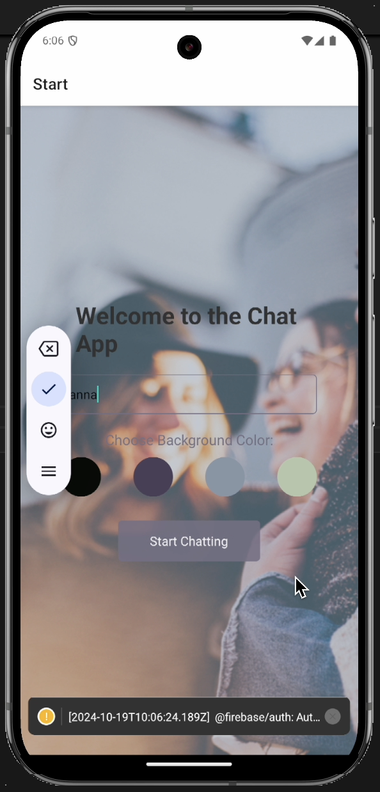
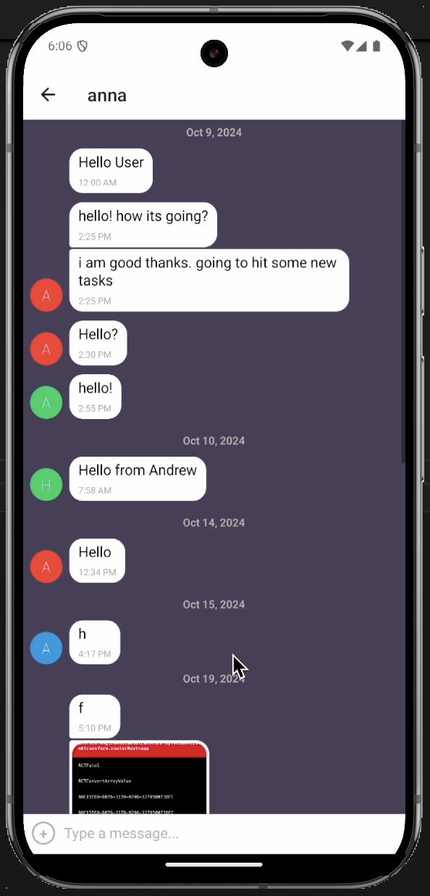

Project Description
A mobile chat application that allows users to enter their name, choose a background color for the chat
screen, and participate in a conversation. Built with React Native and Expo, this app supports text,
image, and location sharing, offering a versatile cross-platform experience on both iOS and Android.
Links
GitHub Repository:
Chat App GitHub Repository
Technologies Used
- React Native: Framework for building the mobile application
- Expo: For simplifying the development and testing process
- Firebase Firestore: Database for real-time message storage
- Firebase Storage: For storing images shared in the chat
- React Native Gifted Chat: Customizable chat UI component
- AsyncStorage: For offline message storage
- Expo ImagePicker & Expo Location: For sharing images and location in the chat
Additional Project Materials
- Firebase Configuration Guide: Contains step-by-step instructions for setting up
Firestore and Storage for this project
- User Stories & Kanban Board: Used to define key user needs, such as joining a chat
and sharing media. The Kanban board helped prioritize tasks and track progress
Project Highlights
- Anonymous Sign-In: Users can join a chat without creating an account using Firebase’s anonymous
authentication
- Offline Capability: Messages are stored locally if the device is offline and synced upon
reconnection
- Cross-Platform Compatibility: Provides a seamless experience across both iOS and Android devices
Setup Instructions
- Prerequisites: Make sure Node.js (v16.19.0 or newer), Expo CLI, and Android Studio
or Xcode are installed.
- Installation:
- Clone the repository and navigate to the project directory.
- Install dependencies with
npm install.
- Install Expo libraries for image and location sharing:
expo install expo-image-picker expo-location firebase.
- Start the project:
npm start.
- Test on an emulator or scan the QR code with Expo Go on a mobile device.
Testing
- Preview: Use Expo Go on a mobile device to view the app in real time.
- Emulators: Test on Android using Android Studio or on iOS using Xcode.
Screenshots

